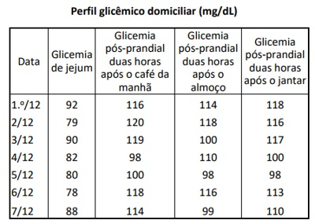
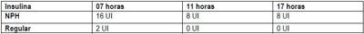
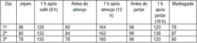
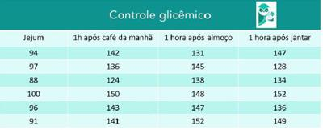

Questão 1 · Diagnóstico · Teste oral de tolerância à glicose 75g TOTG 75g · 4000185775A realização do teste oral de tolerância à glicose com 75 g de glicose é considerada um teste de triagem de diabetes gestacional em mulheres no pré-natal. Assinale a alternativa que apresenta o tempo ideal preconizado para a realização desse teste.
A Entre 24 e 28 semanas de gestação.
B Entre 18 e 22 semanas de gestação.
C Logo no início da gestação.
D Seis meses após o parto.
Questão 2 · Diabetes na gestação DMG · Obstetrícia · 4000184716Paciente de 46 anos de idade, obesa, hipertensa crônica e tabagista, encontra-se na 10ª semana de gestação. Retorna para sua segunda consulta de pré-natal na Unidade Básica de Saúde e, ao serem avaliados os resultados dos exames solicitados, foi observado glicemia de jejum = 90 mg/dl. Neste caso, qual é a conduta adequada:
A Realizar Teste Oral de Tolerância à Glicose (TOTG) de 75 g entre 24 e 28 semanas de gestação.
B Solicitar nova glicemia de jejum e hemoglobina glicada entre 16 e 18 semanas de gestação.
C Repetir glicemia de jejum e, se manter o valor, iniciar hipoglicemiante por via oral, pois é um diagnóstico de diabetes gestacional.
D Manter rotina normal de consultas e solicitar nova glicemia de jejum na 24ª - 26ª e 34ª semana de gestação.
Questão 3 · Diagnóstico · 4000184614Paciente, 25 anos, primigesta, 28 semanas e 4 dias de gravidez, sem queixas, pré-natal em dia e exames normais. Até o momento ganhou 14kg. No cartão de pré-natal consta glicemia de jejum de 88mg/dl com 12 semanas. Traz o exame do teste de tolerância oral à glicose realizado há uma semana, com os seguintes resultados: • Glicemia de jejum de 97g/dl. • Glicemia após 1 hora de dextrosol de 183 mg/dl. • Glicemia após 2 horas de dextrosol 2 horas de 150mg/dl. Sobre o quadro exposto, é CORRETO afirmar que:
A O fato de a gestante ser obesa e ter familiares com DM tipo 2 na família obriga à realização de teste de tolerância oral à glicose no primeiro trimestre.
B O diagnóstico da gestante é Diabetes Melitus Gestacional (DMG) e a conduta inicial é orientação de dieta e prática de atividades físicas, tendo como base o teste de tolerância oral à glicose.
C O teste de tolerância oral à glicose é desnecessário caso a paciente gestante apresente valores de glicemia de jejum no primeiro trimestre inferiores a 92mg/dL.
D A melhor conduta nesse caso é realizar um segundo teste confirmatório, que poderá ser glicemia de jejum ou hemoglobina glicosilada.
Questão 4 · Diabetes na gestação DMG · Obstetrícia · 4000184334Mulher, 30a, G1P0A0, idade gestacional de 26 semanas, é encaminhada com a seguinte curva glicêmica gestacional (CGG): Jejum=89mg/dL; 1h=182mg/dL; 2h=154mg/dL. Antecedentes: obesidade grau II, pai e avô diabéticos. O TRATAMENTO SÃO:
A Euglicemia; orientar dieta, atividade física e repetir CGG com 28 semanas.
B Diabetes gestacional; orientar dieta, atividade física e controle glicêmico.
C Diabetes melito tipo 2; orientar dieta, atividade física e introduzir insulina.
D Intolerância à glicose; orientar dieta e atividade física, não sendo necessário repetir o exame.
Questão 5 · Diabetes na gestação DMG · Obstetrícia · 4000184232Juliana, G1, está com 31 semanas e comparece na consulta de pré-natal para mostrar alguns exames de rotina. Dentre os exames, o teste oral de tolerância à glicose demonstra os seguintes valores: 95 mg/dl em jejum; 160 mg/dl uma hora após e 155 duas horas após. Em relação ao caso clínico relatado, considerando os valores de exames apresentados, julgue o item a seguir. É necessário solicitar o controle glicêmico e orientar sobre alimentação.
A Certo.
B Errado.
Questão 6 · Diabetes na gestação DMG · Obstetrícia · 4000184231Juliana, G1, está com 31 semanas e comparece na consulta de pré-natal para mostrar alguns exames de rotina. Dentre os exames, o teste oral de tolerância à glicose demonstra os seguintes valores: 95 mg/dl em jejum; 160 mg/dl uma hora após e 155 duas horas após. Em relação ao caso clínico relatado, considerando os valores de exames apresentados, julgue o item a seguir. Iniciar insulina NPH 0,3 UI/KG por dia.
A Certo.
B Errado.
Questão 7 · Diabetes na gestação DMG · Obstetrícia · 4000184230Juliana, G1, está com 31 semanas e comparece na consulta de pré-natal para mostrar alguns exames de rotina. Dentre os exames, o teste oral de tolerância à glicose demonstra os seguintes valores: 95 mg/dl em jejum; 160 mg/dl uma hora após e 155 duas horas após. Em relação ao caso clínico relatado, considerando os valores de exames apresentados, julgue o item a seguir. Apenas um valor do teste oral se encontra alterado.
A Certo.
B Errado.
Questão 8 · Diabetes na gestação DMG · Obstetrícia · 4000184229Juliana, G1, está com 31 semanas e comparece na consulta de pré-natal para mostrar alguns exames de rotina. Dentre os exames, o teste oral de tolerância à glicose demonstra os seguintes valores: 95 mg/dl em jejum; 160 mg/dl uma hora após e 155 duas horas após. Em relação ao caso clínico relatado, considerando os valores de exames apresentados, julgue o item a seguir. Indicar resolução do parto com 37 semanas devido ao diabetes gestacional.
A Certo.
B Errado.
Questão 9 · Diabetes na gestação DMG · Obstetrícia · 4000184228Juliana, G1, está com 31 semanas e comparece na consulta de pré-natal para mostrar alguns exames de rotina. Dentre os exames, o teste oral de tolerância à glicose demonstra os seguintes valores: 95 mg/dl em jejum; 160 mg/dl uma hora após e 155 duas horas após. Em relação ao caso clínico relatado, considerando os valores de exames apresentados, julgue o item a seguir. Apenas um valor alterado do teste oral já diagnostica diabetes gestacional.
A Certo.
B Errado.
Questão 10 · Diabetes na gestação DMG · Obstetrícia · 4000184227Juliana, G1, está com 31 semanas e comparece na consulta de pré-natal para mostrar alguns exames de rotina. Dentre os exames, o teste oral de tolerância à glicose demonstra os seguintes valores: 95 mg/dl em jejum; 160 mg/dl uma hora após e 155 duas horas após. Em relação ao caso clínico relatado, considerando os valores de exames apresentados, julgue o item a seguir. Controle alimentar e atividade física podem ser recomendados no caso descrito.
A Certo.
B Errado.
Questão 11 · Diabetes na gestação DMG · Obstetrícia · 4000183444Gestante tercigesta na 12ª semana de gravidez, procurou o pré-natal trazendo resultado dos exames de rotina. No momento, refere cefaleia, tonturas, náuseas e vômitos. A glicemia de jejum foi de 92mg/dL. Assinale a alternativa CORRETA quanto à interpretação e conduta mais adequada.
A Exame normal. Prosseguir a investigação, realizando o teste de tolerância oral à glicose a 75g entre 24 e 28 semanas.
B Exame alterado. Repetir a glicemia de jejum para confirmar o resultado. São necessários dois valores alterados, para iniciar o tratamento.
C Exame alterado. Iniciar o tratamento e posteriormente, confirmar realizando o teste de tolerância oral à glicose a 75g entre 24 e 28 semanas.
D Exame normal. Repetir o exame, solicitar hemoglobina glicada e fazer o teste de tolerância oral à glicose a 75g entre 24 e 28 semanas.
E Exame alterado. Iniciar o tratamento.
Questão 12 · Diabetes na gestação DMG · Obstetrícia · 4000183144Secundigesta, 38 anos de idade, com idade gestacional de 10 semanas, apresenta glicemia de jejum de 94 mg/dL, colhida há 2 dias. A gestação anterior, há 5 anos, transcorreu sem complicações e com parto normal a termo de recém-nascido com peso adequado (3300g). Qual deve ser a orientação, baseado no resultado laboratorial apresentado?
A Solicitar nova glicemia de jejum e Hb glicada após as 12 semanas.
B Solicitar curva glicêmica com 24 semanas.
C Não é necessário solicitar exames adicionais.
D Solicitar curva glicêmica com 28 semanas.
Questão 13 · Diabetes na gestação DMG · Obstetrícia · 4000182978Tercigesta de 36 anos inicia acompanhamento pré-natal com 8 semanas. AP: G3P2C0, macrossomia fetal (4.068g) na segunda gestação. Exame físico: IMC 30,2 Kg/m². Glicemia de jejum (primeiro trimestre): 88 mg/dL. Nesse momento, o resultado do rastreamento do diabetes mellitus gestacional e a conduta são
A negativo; GTT 75g entre 24 e 28 semanas.
B positivo; GTT 100g entre 24 e 28 semanas.
C positivo; tratamento com dieta e atividade física.
D negativo; nova glicemia de jejum a partir da 32ª semana.
Questão 14 · Diabetes na gestação DMG · Obstetrícia · 4000182122Primigesta, 24 anos, com 29 semanas de idade gestacional, sem comorbidades prévias à gestação. Retorna à consulta de pré-natal sem queixas. Recebeu diagnóstico de Diabetes Mellitus gestacional há 10 dias, com adequada adesão ao plano nutricional, programa de atividade física e automonitorização glicêmica, porém mantendo se acima das metas glicêmicas em aproximadamente 50% dos valores aferidos. Exame físico geral e obstétrico dentro dos padrões de normalidade. Ganho de peso de 300 gramas em uma semana. Foi indicada insulinoterapia, porém paciente é moradora de área rural di culdade de acesso, transporte e armazenamento adequados da insulina. Considerando as recomendações brasileiras de 2019 (Organização Pan Americana da Saúde. Ministério da Saúde. Federação Brasileira das Associações de Ginecologia e Obstetrícia. Sociedade Brasileira de Diabetes), qual a alternativa terapêutica farmacológica mais adequada para essa paciente?
A Gilbenclamida.
B Acarbose.
C Liraglutida.
D Metformina.
Questão 15 · Diabetes na gestação DMG · Obstetrícia · 4000181731Primigesta, 24 semanas, procura maternidade com disúria e polaciúria há 3 dias. Nega outras queixas. Médico que a atende verifica o cartão de pré-natal e identi ca uma glicemia de jejum realizada com 10 semanas de 91 mg/dL e um teste de tolerância oral a glicose (TTOG) 75 g realizado com 21 semanas de 94 mg/dL (jejum)/140 mg/dL (pós 1 hora)/104 mg/dL (pós 2 horas). Nesse caso,
A a paciente realizou corretamente a glicemia de jejum na primeira consulta de pré-natal, pois deve-se avaliar gestantes sem diagnóstico prévio com objetivo de detectar
B a paciente não realizou hemoglobina glicada, apesar de ser o principal exame laboratorial para diagnóstico de diabetes mellitus gestacional e pode ser realizado em qualquer momento da gestação.
C o TTOG 75 g realizado está normal e indicação adequada, pois recomenda-se a realização do mesmo para investigação de
D a paciente não tem diagnóstico de diabetes mellitus gestacional, pois o diagnóstico, feito por glicemia de jejum tem como valor positivo acima de 126 mg/dL, sendo que pode ser feito em qualquer idade gestacional.
Revisar: possível letra faltando em enunciado
Questão 16 · Diabetes na gestação DMG · Obstetrícia · 4000181652Gestante, 23 semanas, refere que não fez nenhum dos exames solicitados na rotina de primeiro trimestre. Nega doenças prévias; o peso pré-gestacional era 80 kg e, atualmente, está com 90 kg, sendo que a altura é de 1,60 m. Considerando a disponibilidade técnica adequada, a melhor conduta para o diagnóstico de diabetes gestacional é solicitar
A hemoglobina glicada e glicemia de jejum no momento da consulta.
B teste oral de tolerância à glicose com 100g em jejum e duas horas após sobrecarga.
C teste oral de tolerância à glicose com 75 g em jejum de duas horas imediatamente.
D apenas hemoglobina glicada.
E teste oral de tolerância à glicose com 75 g em jejum, uma e duas horas após sobrecarga, entre 24 e 28 semanas.
Questão 17 · Particularidades seguimento prénatal · Obstetrícia · 4000181411Lúcia, 41 anos, G2P0A1, idade gestacional de 37 semanas, apresentando Diabetes Mellitus Gestacional (DMG) compensada com dieta, diagnosticada em teste de sobrecarga oral com 75 g de glicose na 24ª semana de gestação. Comparece à consulta pré-natal referindo discreta diminuição da movimentação fetal nas últimas 24h. Em relação à cardiotocogra a (CTG) anteparto, na avaliação da vitalidade deste feto, podemos afirmar:
A Em gestações de risco habitual, a frequência mais adequada para a realização de cardiotocografia anteparto é de três vezes por semana.
B Linha de base, variabilidade, presença de acelerações transitórias e observação de movimentação fetal são parâmetros avaliados em uma CTG anteparto.
C A CTG anteparto pode ser reativa ou não reativa, a depender da presença ou não de duas ou mais desacelerações transitórias, em 20 minutos de exame.
D Durante uma avaliação de vitalidade fetal com CTG anteparto, a partir de 37 semanas de gestação, a frequência cardíaca fetal normal encontrada deve ser de 120bpm a 160bpm.
Questão 18 · Diabetes na gestação DMG · Obstetrícia · 4000181266R.S.F, 27 anos, primigesta, IG usg: 10 semanas, veio em primeira consulta de pré natal já com exames laboratoriais realizados há 1 semana. Glicemia de jejum de 90mg/dL. Nega comorbidades. De acordo com o caso acima, assinale a alternativa correta.
A Deve-se realizar TOTG (teste oral de tolerância à glicose) com 24-28 semanas de idade gestacional.
B Deve-se solicitar hemoglobina glicada para avaliar diabetes pré-gestacional.
C Trata-se de um caso de diabetes gestacional.
D Deve-se nova glicemia de jejum no segundo e terceiro trimestres de idade gestacional.
E Provavelmente, trata-se de um caso de resistência insulínica aumentada.
Questão 19 · Diabetes na gestação DMG · Diagnóstico · 4000191033Gestante obesa chega na consulta de pré-natal com 12 semanas. Teve 1 lho anterior com 4 200 g. Fez os exames de rotina, e a glicemia foi de 88 mg/dL. Nesse caso, qual é a melhor conduta a ser tomada?
A Pelo fato de ser obesa e seu filho ter sido macrossômico, pertence ao grupo de alto risco para diabetes gestacional e, portanto, deve realizar TTGO agora no primeiro trimestre.
B Como a glicemia está dento do normal, o TTGO deverá ser realizado entre 24 a 28 semanas, seguindo o protocolo de todas as gestantes.
C Pelo fato de ser obesa e ter tido filho macrossômico, pertence ao grupo de alto risco para diabetes gestacional e, portanto, deve realizar TTGO entre 18 a 23 semanas.
D Pelos antecedentes apresentados, já é considerada diabética gestacional.
E A glicemia de jejum está normal e, portanto, não se justifica fazer nenhuma avaliação complementar, e sim, segundo protocolo vigente, repetir a glicemia no terceiro trimestre após as refeições (glicemia pós-prandial).
Questão 20 · Diagnóstico · Obstetrícia · 4000177455Paciente primigesta, 8 semanas de gestação, vem para primeira consulta de pré-natal e apresenta glicemia de jejum de 96 m/dL. De acordo com o consenso Rastreamento e diagnóstico de diabetes mellitus gestacional no Brasil, de 2017 (Organização PanAmericana da Saúde e Ministério da Saúde), a paciente
A tem rastreio positivo para diabetes gestacional, devendo realizar o teste oral de tolerância à glicose entre 24 a 28 semanas. Em caso de teste oral positivo, o seguimento dessa patologia deve ser realizado por meio de glicemia capilar.
B já tem diagnóstico de diabetes gestacional, sendo necessário, para seguimento dessa patologia, o perfil glicêmico por meio de glicemia capilar.
C tem rastreio positivo para diabetes gestacional, devendo realizar imediatamente o teste oral de tolerância à glicose. Em caso de teste oral positivo, o seguimento dessa patologia deve ser realizado por meio de glicemia capilar.
D já tem diagnóstico de diabetes gestacional, sendo necessário, para seguimento dessa patologia, o perfil glicêmico por meio de hemoglobina glicosilada.
Questão 21 · Complicações maternas · Repercussões do diabetes na gestação · Complicações f etais · 4000175351A respeito do diabetes gestacional, assinale a afirmativa correta.
A Segundo a
B Caso a paciente apresente uma glicemia de jejum no primeiro trimestre inferior a 92 mg/dL, a paciente deverá realizar um teste oral de tolerância à glicose entre a 24ª e a 28ª semana. Valores iguais ou superiores a 126 mg/dL ainda não confirmam o diabetes gestacional.
C Entre as complicações materno-fetais, destacam-se: macrossomias, morte fetal súbita, pré-eclâmpsia e polidrâmnio.
D Na fisiologia da gestação, sabe-se que no primeiro trimestre há uma tendência à hipoglicemia e, em consequência, há aumento na necessidade de uso de insulina, dada a maior passagem de glicose para o feto.
Questão 22 · Medicamentoso · Indicação de parto · 4000170025Tercigesta de 36 anos, com 34 semanas de gestação, tem diagnóstico de diabetes gestacional (GTT 75 g alterado) e está sendo tratada com dieta para diabéticos (1800 Kcal/dia) e caminhada (150 minutos/semana). Exame físico: IMC: 37 kg/m², PA: 130/80 mmHg, altura uterina > percentil 90. Ultrassom obstétrico: peso fetal no percentil 80, índice de líquido amniótico > percentil 90. Controle glicêmico (HGT): jejum (92 mg/dL), 2 horas pós-café (121 mg/dL), 2 horas pós-almoço (144 mg/dL) e 2 horas pós-jantar (132 mg/dL). As condutas são:
A manter controle glicêmico com dieta e programar resolução da gestação a partir da 38ª semana.
B prescrever metformina e programar resolução da gestação a partir da 39ª semana.
C prescrever insulina e programar resolução da gestação a partir da 37ª semana.
D prescrever metformina e programar resolução da gestação a partir da 37ª semana.
Questão 23 · Líquido Amniótico · Controle glicêmico · Crescimento f etal · 4000170024Tercigesta de 36 anos, com 34 semanas de gestação, tem diagnóstico de diabetes gestacional (GTT 75 g alterado) e está sendo tratada com dieta para diabéticos (1800 Kcal/dia) e caminhada (150 minutos/semana). Exame físico: IMC: 37 kg/m², PA: 130/80 mmHg, altura uterina > percentil 90. Ultrassom obstétrico: peso fetal no percentil 80, índice de líquido amniótico > percentil 90. Controle glicêmico (HGT): jejum (92 mg/dL), 2 horas pós-café (121 mg/dL), 2 horas pós-almoço (144 mg/dL) e 2 horas pós-jantar (132 mg/dL). O controle glicêmico, o crescimento fetal e o líquido amniótico estão, respectivamente:
A adequado; grande para idade gestacional, aumentado.
B inadequado; adequado para idade gestacional; aumentado.
C adequado; adequado para idade gestacional, normal.
D inadequado; grande para idade gestacional, normal.
Questão 24 · Complicações f etais · Diagnóstico · 4000169973Entre as intercorrências clínicas na gestação, o diabetes tem um papel importante, seja pela incidência ou pelas possíveis repercussões. Em relação a essa doença, é correto afirmar que
A o diabetes gestacional é a principal causa de malformações fetais.
B a gestante com glicemia de 94 na primeira consulta deve fazer teste de sobrecarga à glicose na 24ª semana.
C se fizer teste de tolerância à glicose e tiver somente um valor alterado deverá repeti-lo.
D se a glicemia de jejum for de 126 mg ou mais na gestação será considerada como portadora de
E o rastreamento do diabetes gestacional deverá ser feito nas gestantes que possuam fatores de risco.
Questão 25 · Diagnóstico · 4000169557Segundo os critérios da American Diabettes Association (ADA), Organização Mundial da Saúde (OMS), Federação Internacional de Ginecologia e Obstetrícia (FIGO), sobre o diagnóstico de diabetes melito e gestação, analisar os itens abaixo: I. Uma glicemia de jejum de 124mg/dl faz o diagnóstico de diabetes melito gestacional. II. Glicemia de jejum, no primeiro trimestre, de 96mg/dl é indicação para a realização de teste oral de tolerância à glicose (TOTG) entre 24 e 28 semanas de gestação. III. Glicemia de jejum de 130mg/dl faz o diagnóstico de diabetes melito, e o tratamento deve ser instituído. Está(ão) CORRETO(S):
A Somente o item I.
B Somente o item II.
C Somente os itens I e III.
D Todos os itens.
Questão 26 · Dieta · Atividade f ísica · 4000169435Uma paciente de 37 anos de idade, primigesta, com idade gestacional de 29 semanas e diabetes mellitus gestacional diagnosticada por alterações no teste oral de tolerância à glicose (TOTG 75 g), retorna à consulta pré-natal com os seguintes valores diários de glicemia capilar (dextro) domiciliar. Realiza dieta orientada por nutricionista e faz exercícios regularmente há quinze dias. Com base nas diretrizes do artigo americana da Saúde, do Ministério da Saúde, da Federação Brasileira das Associações de Ginecologia e Obstetrícia e da Sociedade Brasileira de Diabetes (2019), é correto afirmar que a conduta adequada nesse caso hipotético é

A prescrever hipoglicemiante oral (metformina), em associação com a dieta e a atividade física regular.
B acrescentar suplementos dietéticos noturnos, pois as glicemias capilares de jejum sugerem ocorrência de hipoglicemias.
C manter as orientações dietéticas e a atividade física regular.
D a insulinoterapia, em associação com a dieta e a atividade física regular.
E a insulinoterapia, em associação com o hipoglicemiante oral (metformina), a atividade física regular e a dieta.
Questão 27 · Diabetes na gestação DMG · Obstetrícia · 4000168998Uma paciente em sua primeira consulta de pré-natal, com 12 semanas de idade gestacional, apresenta níveis de glicemia de jejum de 92 pelos parâmetros atuais. Com relação a esse caso clínico, assinale a alternativa correta.
A Considerar diabetes gestacional e encaminhar para avaliação e controle nutricional.
B Deve-se iniciar tratamento imediato com insulina e metformina.
C Deve-se iniciar tratamento com metformina e glibenclamida, já que está confirmada a alteração e gestante sempre necessita de tratamento visando proteção do feto.
D Como dieta e atividade física melhoram muito pouco o quadro glicêmico na gestação, o obstetra está autorizado a não recomendar esse procedimento e partir direto para medicação e encaminhamento para endocrinologista.
E Pedir imediatamente teste de tolerância à glicose e à lactose, insulinemia, hemoglobina glicosilada e iniciar glibenclamida.
Questão 28 · Dieta · Fisiopatologia · Diagnóstico · 4000168740Sobre o diabetes gestacional assinale a alternativa CORRETA:
A A glicemia de jejum e o teste de tolerância à glicose com 75g de glicose são exames utilizados para o diagnóstico
B Na maioria das mulheres, o metabolismo de carboidratos não. retoma as funções normais após a parto
C Seu tratamento tem como pilares: a dieta, o exercício físico e o uso de hipoglicemiantes orais
D Se o controle glicêmico for insatisfatório, a resolução da gravidez pode ser considerada entre 30 o 40 semanas
Questão 29 · Diagnóstico · 4000168294Paciente de 38 anos, com 11 semanas de gestação, moradora da Capital, trouxe à consulta pré-natal o resultado da glicemia de jejum de 90 mg/dl. Em seu histórico, constavam registros de IMC pré-gestacional de 42 kg/m² e de hipertensão arterial. A conduta mais adequada no momento é solicitar.
A medição de hemoglobina glicada.
B teste de tolerância a glicose imediatamente.
C teste de tolerância a glicose entre 24-28 semanas.
D repetição da glicemia de jejum entre 24-28 semanas.
Questão 30 · Diagnóstico · Obstetrícia · 4000167387Mulher, 32a, G2P1A0, idade gestacional de 30 semanas e 2 dias, queixa-se de cefaleia, coriza, dor de garganta e tosse há 3 dias. Nega náuseas, vômitos, febre e contato com pessoas com covid-19. Antecedentes Pessoais: hipertensão arterial crônica, diabetes gestacional controlado com dieta e covid-19 há 5 meses. Medicamentos em uso: sulfato ferroso, carbonato de cálcio 1g/dia, AAS 100mg/dia, metildopa 1g/dia. Recebeu vacina contra covid-19 P zer® há 2 meses. Exame físico: IMC= 38Kg/m²; PA= 109x76 mmHg; T= 37,8°C; FR= 26 ipm; FC= 109 bpm, oximetria de pulso (ar ambiente)= 97%. Realizou per l glicêmico há 6 dias: jejum= 134 mg/dL, pós café= 163mg/dL, pós-almoço= 220 mg/dL e pós- jantar=188mg/dL. A CONDUTA É:
A Internar para introdução de insulina; realizar RT-PCR covid-19 e isolamento respiratório.
B Introduzir insulina e seguimento ambulatorial; descartada covid-19 pelo antecedente de infecção prévia e vacinação.
C Internar para introdução de insulina; sem necessidade isolamento respiratório.
D Orientar dieta para diabético, realizar RT-PCR covid-19 e isolamento domiciliar.
Questão 31 · Diagnóstico · 4000167167Gestante, 28 anos, obesa, vem para a consulta de pré-natal de sua segunda gestação preocupada com o resultado do seu teste oral de tolerância à glicose com 75mg de glicose (TOTG-75), visto que teve diabetes gestacional em sua última gravidez. No dia da consulta, a paciente se encontra com 26 semanas e 3 dias de gestação e traz o resultado de sua glicemia de jejum realizada na primeira consulta pré-natal, com o seguinte resultado: 89mg/dl. Traz também TOTG-75, com os resultados: glicemia de jejum 91mg/dl, após 1h da ingesta: 176mg/dl, e, após 2h: 140mg/dl. Sendo assim, o médico deve informar a paciente que
A ela possui diabetes gestacional e o tratamento deve ser com dieta e exercícios físicos.
B ela possui diabetes gestacional e o tratamento deve ser com insulina.
C ela possui diabetes pré-gestacional (preexistente) e deve iniciar dieta e exercícios físicos.
D ela possui diabetes pré-gestacional (preexistente) e o tratamento deve ser instituído com metformina.
E ela não possui diabetes gestacional, mas, por ter histórico e outros fatores de risco, deve ficar atenta e seguir rotina com alimentação saudável e exercícios para prevenção.
Questão 32 · Complicações maternas · Complicações f etais · Diagnóstico · 4000166608O diabetes tem aumentado sua incidência na população, inclusive nas mulheres na fase de gestação, tornando-se um desa o para o cuidado do binômio mãe e bebê na vigência dessa patologia. Sobre a ocorrência da gestação e diabetes, assinale a alternativa correta.
A O mau controle glicêmico da paciente com
B O diagnóstico é um consenso mundial, realizado somente por meio do teste de tolerância oral à glicose.
C Além do controle glicêmico, a vasculopatia, inclusive com alterações da função renal, pode piorar o prognóstico da evolução da gestação.
D Os níveis glicêmicos elevados no segundo e terceiro trimestre são as causas principais de malformações dos recém-nascidos.
Questão 33 · Diagnóstico · Controle glicêmico · 4000166423Leia o caso clínico a seguir. Paciente atendida em serviço com situação de viabilidade nanceira e/ou disponibilidade técnica parcial. Idade gestacional de 15 semanas com glicemia de jejum = 130 mg/dl. Pelos critérios da OPAS, Ministério da Saúde, FEBRASGO e Sociedade Brasileira de Diabetes de 2016, a conduta deve ser a seguinte:
A instituir dieta, exercícios físicos e monitorização glicêmica, pois se trata de diabetes mellitus gestacional.
B aguardar até que seja feito o teste oral de tolerância à glicose com 100 g de glicose.
C instituir dieta, exercícios físicos e monitorização glicêmica, pois se trata de diabetes mellitus.
D aguardar até que seja feito o teste oral de tolerância à glicose com 75 g de glicose.
Questão 34 · Controle glicêmico · 4000166259Gestante, de 28 semanas, apresenta TTOG com sobrecarga de 75 g de glicose realizada com 26 semanas: 92-182-152 mg/dL. Recebe orientação quanto à dieta, atividade física e controle glicêmico. Retorna 7 dias depois dessa consulta, relatando ter seguido todas as orientações, perdeu 2 kg de peso. Com esse perfil glicêmico, a conduta correta será a seguinte:
A deve-se prescrever insulina regular às 22h para melhorar o nível glicêmico da manhã.
B deve-se reforçar dieta e atividade física por mais 15 dias, antes de propor medicação.
C os controles estão dentro do razoável, manter orientação de dieta e atividade física.
D deve-se prescrever insulina, pois tem muitos controles inadequados.
Questão 35 · Fisiopatologia · Medicamentoso · 4000166254Primigesta de 36 semanas, 37 anos de idade, diabética gestacional, controlada com dieta e atividade física até a 26ª semana, quando necessitou de insulina regular nas doses de 20 UI no café da manhã, 18 UI no almoço, 18 UI no jantar e 14 UI de insulina NPH às 21 horas. Teve bom controle glicêmico até a 35ª semana, quando apresentou vários episódios de hipoglicemia. Qual é o diagnóstico mais provável?
A Insuficiência placentária.
B Hipoinsulinismo fetal.
C Resistência periférica à insulina.
D Elevação de lactogênio placentário.
Questão 36 · Diagnóstico · Controle glicêmico · 4000166179Uma tercigesta com doze semanas, um parto normal e um abortamento anterior apresenta glicemia de jejum de 112 mg/dL. Com base nesse caso hipotético, assinale a alternativa correta.
A Trata-se de
B Deve ser realizada a curva glicêmica com 75 g para confirmação do diagnóstico de diabetes gestacional.
C Trata-se de diabetes gestacional, sendo indicado o início do tratamento comportamental, com dieta e atividade física.
D Trata-se de
E Trata-se de diabetes gestacional, sendo indicado o início do tratamento medicamentoso.
Questão 37 · Doenças associadas à gestação · Diabetes na gestação DMG · Diagnóstico · 4000165246O diagnóstico de diabetes gestacional também se associa ao aumento na incidência de disglicemias e de diabetes franco, posteriormente, na vida da mulher. No primeiro trimestre, o resultado da glicemia de jejum de 138 mg/dL permite o diagnóstico de
A diabetes gestacional.
B diabetes pré-gestacional.
C intolerância à glicose.
D diabetes insulinodependente.
E sobrepeso.
Questão 38 · Diagnóstico · Controle glicêmico · 4000164692Uma gestante, sem fator de risco para Diabetes Mellitus, apresenta, nos exames do primeiro trimestre, glicemia de jejum de 93 mg/dL. Secundigesta, com gestação anterior sem intercorrências (risco habitual).Assinale a alternativa correta, considerando o protocolo atual do Ministério da Saúde/OPAS/FEBRASGO (2017/2019).
A Trata-se de um caso de diabetes mellitus gestacional, devendo-se iniciar o tratamento. Não é necessário a realização do teste de tolerância oral à glicose.
B Solicitar hemoglobina glicada. Se estiver normal, solicitar o teste oral de tolerância à glicose, com 100 gramas (3 horas), entre 22 a 26 semanas.
C Orientar a dieta para gestação de risco habitual e solicitar o teste oral de tolerância a glicose de 75 gramas com 22 a 26 semanas.
D Realizar o teste de sobrecarga à glicose, duas horas após ingesta de 75 gramas, ainda no primeiro trimestre.
E Iniciar com metformina e avaliar a necessidade de insulinoterapia através do perfil glicêmico no segundo trimestre.
Questão 39 · Diagnóstico · Obstetrícia · 4000164512Analise as assertivas abaixo em relação à diabetes pré-gestacional: I. Realizar rastreamento de malformações com ultrassonografia morfológica entre 20 e 24 semanas. II. Se houver complicações vasculares maternas, o doppler umbilical deve ser realizado a partir da 26ª semana. III. Deve-se realizar ultrassonogra a obstétrica seriada a cada 2 semanas, a partir da 24ª semana, para avaliação do crescimento fetal. Quais estão corretas?
A Apenas I.
B Apenas III.
C Apenas I e II.
D I, II e III.
Questão 40 · Diabetes na gestação DMG · 4000164085Mulher de 32 anos, G3P2A0, procura atendimento na UBS com 40 dias pós-parto para orientações. Analisando seu cartão de pré-natal, observa-se que iniciou o acompanhamento na 25ª semana, tendo comparecido a seis consultas e negando qualquer comorbidade ou intercorrência na gravidez. Os exames mostraram na 1ª consulta: hematócrito = 35%; hemoglobina = 10,5g/dL; glicemia de jejum = 96mg/dL; VDRL e anti-HIV negativos. Toxoplasmose IgG negativo e IgM negativo. Tipagem sanguínea 0 Rh positivo; Coombs indireto negativo. O resumo enviado pela maternidade refere parto cesariano na 39ª semana de gestação, por desproporção cefalopélvica de feto com 4.250g, Apgar 9/9, tendo apresentado atonia uterina corrigida com uso de medicação uterotônica. Permaneceu por dois dias internada, tendo alta comexame físico descrevendo útero 3cm abaixo da cicatriz umbilical, lóquios serossanguinolentos, ferida operatória limpa e seca, e edema de membros inferiores bilateral, frio, 2+/4+. Entre os exames que devem ser solicitados para essa paciente no seu puerpério, deve-se incluir:
A TOTG
B ultrassonografia pélvica
C sorologia para toxoplasmose
D Doppler de membros inferiores
Questão 41 · Diabetes na gestação DMG · 4000163714Os Centers for Disease Control and Prevention (CDC) de nem cuidado pré-concepcional como “um conjunto de intervenções que visam identi car e modi car riscos biomédicos, comportamentais e sociais para a saúde ou o resultado da gestac pré-natal destacam-se o rastreio para a Diabetes Mellitus e a profilaxia desta patologia. Desta maneira, é correto afirmar:
A Estabelecer o diagnóstico do Diabetes Mellitus Gestacional (DMG) oferece a oportunidade de melhorar o prognóstico da gravidez, mas não reduz os fatores de risco associados ao desenvolvimento subsequente do diabetes tipo 2.
B O diabetes pré-gestacional merece ser identificado na 1ª consulta pré-natal, pois compromete a mãe e o feto. Mulheres diabéticas que desejam engravidar, devem ser avaliadas apenas se apresentarem história de mal passado obstétrico.
C Grávidas de alto risco para diabetes que apresentam no 1º trimestre valor da HbA1c ≥ 6% têm reduzido valor preditivo para Diabetes Mellitus Gestacional. Mulheres com diabetes tipo 1 que pretendam engravidar devem passar por avaliação da tireoide pela determinação do TSH e do anticorpo anti-tireoperoxidase (anti-TPO).
D Toda mulher com Diabetes Mellitus Gestacional (DMG) deve ser rastreada entre 6 e 12 semanas após o parto pelo TOTG-75 g de 2h. Diabéticas que planejam a gravidez, devem ser aconselhadas a utilizar suplementação com ácido fólico 3 meses antes da concepção e por 12 semanas depois, para prevenir os defeitos do tubo neural (DTN).
Questão 42 · Mal f ormações f etais · Crescimento f etal · 4000146018Paciente primigesta, IG 29 semanas, comparece em consulta de pré-natal com resultados de exames de segunda rotina: Hb 12 g/dL; Ht 33%; plaquetas 134 mil/mL. Teste de tolerância oral à glicose (TTOG): jejum: 90mg% / 1ª hora: 180mg% / 2ª hora: 150mg%; HIV negativo; VDRL negativo; toxoplasmose IgG negativo e IgM negativo. Urina I. sem alterações, urocultura com flora mista. Considerando os dados apresentados, assinale o risco potencial maior para esta gestação:
A Malformação cardíaca fetal
B Sífilis congênita
C Macrossomia fetal
D Restrição de crescimento fetal
Questão 43 · Diagnóstico · Controle glicêmico · 4000145927Uma gestante de 39 anos de idade, G2 PN1 A0, com idade gestacional de dez semanas e três dias, compareceu à consulta de pré-natal com glicemia de jejum de 94 mg/dL. Com base nesse caso hipotético, assinale a alternativa correta.
A A paciente deverá repetir a glicemia de jejum e, caso esteja acima de 94 mg/dL, realizar imediatamente TOTG 75 g para a confirmação diagnóstica de diabetes gestacional.
B A paciente deverá realizar TOTG 75 g para a confirmação diagnóstica de diabetes gestacional. Caso seja confirmada, deverá ser encaminhada para acompanhamento nutricional e iniciar tratamento medicamentoso e controle glicêmico.
C A paciente deverá realizar TOTG 75 g para a confirmação diagnóstica de diabetes gestacional. Caso seja confirmada, deverá ser encaminhada para acompanhamento nutricional, recebendo indicação de atividade física e controle glicêmico.
D A paciente tem diagnóstico de diabetes gestacional, devendo ser encaminhada para acompanhamento nutricional e iniciar tratamento medicamentoso e controle glicêmico.
E A paciente tem diagnóstico de diabetes gestacional, devendo ser encaminhada para acompanhamento nutricional e iniciar atividade física e controle glicêmico.
Questão 44 · Doenças associadas à gestação · Diabetes na gestação DMG · Obstetrícia · 4000144272Secundigesta, 23 anos, com 35 semanas e 3 dias de idade gestacional, portadora de diabetes mellitus tipo 1 e nefropatia diabética, retorna à consulta de pré-natal sem queixas clínicas ou obstétricas. Em tratamento regular com controle nutricional e insulinoterapia em esquema basal / bolus de múltiplas doses diárias. Exame físico: bom estado geral, hipocorada (+/++++), hidratada, pressão arterial 110/70 mmHg, frequência cardíaca 82 bpm, frequência respiratória 16 irpm, afebril. Exame obstétrico: feto único, longitudinal, cefálico, altura uterina de 31 cm, atividade uterina ausente, frequência cardíaca fetal de 130 bpm, sem desacelerações, movimentação fetal presente. A avaliação ultrassonográ ca do momento evidencia feto único, cefálico, dorso a direita, per l biofísica fetal 8/8, peso fetal no percentil 6 para idade gestacional, medida de maior bolsão amniótico de 1,6 cm, Dopplervelocimetria evidenciando diástole zero de artéria umbilical e índice de pulsatilidade na artéria cerebral média no percentil 3 para idade gestacional. A análise do per l glicêmico da última semana está demonstrada no quadro a seguir: Considerando-se este caso clínico, a conduta mais adequada no momento é:
A Programação da resolução da gestação com 37 semanas de idade gestacional.
B Internação hospitalar para ajuste das doses de insulina e reavaliação do perfil glicêmico.
C Indicação imediata de resolução da gravidez e controle glicêmico intraparto.
D Dopplervelocimetria diária de artérias umbilicais, cerebral média fetal e dueto venoso.
Revisar: possível letra faltando em enunciado
Questão 45 · Complicações maternas · Complicações f etais · 4000143225O diagnóstico de diabetes gestacional leva a uma série de riscos, tanto durante a gestação como posteriormente. Entre as complicações do diabetes gestacional em longo prazo, encontra-se:
A hipotireoidismo
B doença cardiovascular
C tromboembolismo venoso
D infecção urinária de repetição
Questão 46 · Conduta · Diagnóstico · 4000143195De acordo com os novos critérios da Associação Americana de Diabetes (ADA), NÃO podemos afirmar:
A O teste de tolerância oral à glicose deve ser realizado em todas as gestantes entre 24-28 semanas de gestação para rastreio do Diabetes Gestacional.
B O diagnóstico de Diabetes gestacional se dá quando encontrarmos dois valores alterados no TOTG 75g.
C Fatores de risco devem ser considerados na primeira consulta pré-natal juntamente com a glicemia de jejum.
D A primeira linha de tratamento sempre será dieta e atividade física por um período de tempo variável.
E A insulinoterapia continua sendo a primeira opção medicamentosa em diabéticas clínica e gestacionais.
Questão 47 · Diabetes na gestação DMG · Diagnóstico · Obstetrícia · 4000141626Secundigesta de 37 anos apresenta atraso menstrual de 7 semanas e teste de gravidez positivo. AP: prematuridade e pré- eclâmpsia na gestação anterior. AF: HAS e DM. Exame físico: IMC 31,2 kg/m². A idade gestacional pelo ultrassom é compatível com a DUM. Exames bioquímicos: primeira glicemia de jejum 116 mg/dL, segunda glicemia de jejum 108 mg/dL, hemoglobina glicada 6,8%. A hipótese diagnóstica e a conduta são, respectivamente:
A DM pré-gestacional; iniciar tratamento.
B DM gestacional; iniciar tratamento.
C gestante de alto risco; realizar GTT 75 g imediatamente.
D gestante de baixo risco; realizar GTT 75 g entre 24 e 28 semanas.
Questão 48 · Doenças associadas à gestação · Diabetes na gestação DMG · Obstetrícia · 4000141165Primigesta de 37 semanas e 2 dias, com diabetes gestacional, retorna ao pré-natal com queixa de redução de movimentação fetal há 3 dias (mobilograma: 4 movimentos fetais em 1 hora). Per l glicêmico: jejum= 68 mg/dL, 1 hora pós café= 116 mg/dL, 1 hora pós almoço= 105 mg/dL, 1 hora pós jantar= 118 mg/dL, 23:00 horas = 70 mg/dL, 3:00 horas= 60 mg/dL. Refere manter a mesma dieta com ganho de 300 gramas em 7 dias. Realizou cardiotocogra a: ativa e ultrassonografia: feto cefálico, peso fetal estimado de 3600g (>p90), ILA= 180 mm e Doppler normal, no dia de hoje. A CONDUTA É:
A Realizar cardiotocografia semanal e indução de parto às 40 semanas.
B Realizar cardiotocografia a cada três dias e parto cesárea às 39 semanas.
C Induzir parto com vigilância de vitalidade fetal.
D Realizar parto cesárea urgência.
Questão 49 · Controle glicêmico · 4000140856A enfermeira aciona o médico plantonista para avaliar a paciente JMB, gestante, de 23 anos de idade. A paciente tem diabetes tipo I e foi internada para ajuste do controle glicêmico. Ela é quartigesta, com 3 abortamentos anteriores. A idade gestacional é de 18 semanas. Chamou a enfermeira por estar com mal estar e sudorese fria. A glicemia capilar é de 38 mg/dL. Na avaliação clínica, a paciente está torporosa e não responde adequadamente aos questionamentos, PA 110x70 mmHg, FC 82. A conduta imediata deve ser:
A Oferecer o lanche da tarde.
B Soro glicosado 5% 300 ml endovenoso.
C Administrar 15g glicose via oral.
D Glucagon subcutâneo imediato.
Questão 50 · Diabetes na gestação DMG · 4000140767Primigesta, 32 semanas, realiza pré-natal de alto risco no HUJM, por conta de diabetes gestacional em uso de insulinoterapia (esquema abaixo) e dieta de 1800 calorias/dia, distribuídas em 7 refeições ao dia. Refere caminhar todos os dias por 30 minutos para ir ao trabalho. Traz o resultado da glicemia capilar coletada em diferentes dias da semana, cujos índices são mostrados abaixo: Esquema de insulina utilizado: Resultado da glicemia capilar (mg/dL): Sobre o caso, assinale a afirmativa correta.


A Os valores glicêmicos encontram-se dentro da normalidade, não havendo necessidade de ajustes nas doses de insulina.
B Para melhor controle glicêmico, pode-se associar insulina regular no horário das 11 horas.
C Observa-se necessidade de ajuste na insulina NPH no horário das 11 horas.
D Para ajuste da glicemia, pode-se restringir a dieta para 1200 calorias/dia e aumentar a dose da insulina NPH às 07 horas.
Questão 51 · Complicações maternas · Complicações f etais · Complicações neonatais · 4000140576Sem ter realizado pré-natal, uma multípara com 2 cesarianas prévias por macrossomia fetal procurou atendimento médico na quadragésima semana de gestação, pela data da última menstruação, porque não sentia a movimentação fetal há um dia. Ao exame físico, encontravam-se: regular estado geral, afebril, normotensa, pressão arterial de 120 x 80 mmHg, altura uterina de 42 cm, dinâmica uterina ausente, colo impérvio e batimentos cardíacos fetais não audíveis com sonar. Além disso, a testagem da glicemia capilar foi de 240 mg/dL. O óbito fetal foi confirmado com ultrassonografia feita na urgência. Considerando esse caso,
A a macrossomia provavelmente existente é decorrente de ação anabolizante da hiperglicemia materna no feto.
B o mecanismo de óbito deve estar relacionado à hiperglicemia e consequente policitemia fetal.
C a realização de teste oral de tolerância à glicose seria necessária para confirmar o diagnóstico de diabetes.
D os níveis glicêmicos maternos elevam-se substancialmente quando há insuficiência placentária.
Questão 52 · Mal f ormações f etais · Etiopatogenia e Epidemiologia · Pediatria · 4000139820Com relação às anomalias congênitas, é correto afirmar:
A A malformação é decorrente de uma programação parácrina da qual decorre o desenvolvimento anormal de algum órgão ou sistema.
B O abortamento tardio configura indicação para o aconselhamento genético.
C A síndrome da banda amniótica é um exemplo de anomalia congênita causada por mecanismo de deformação, quando há ruptura da membrana amniótica e consequente lesão das extremidades fetais.
D As anomalias congênitas correspondem a 10% dos abortamentos espontâneos no primeiro trimestre.
E O mau posicionamento dos membros, como o pé torto congênito, pode ser decorrente de força mecânica externa do abdome materno em casos de oligoâmnio.
Questão 53 · Dieta · Diagnóstico · Controle glicêmico · 4000138685Segundo as diretrizes do rastreamento e diagnóstico de diabetes mellitus gestacional no Brasil de 2016 e o que propõem o Tratamento do diabetes mellitus gestacional no Brasil, de 2019, a Organização Pan-americana da Saúde, a Organização Mundial da Saúde, o Ministério da Saúde, a Federação Brasileira de Ginecologia e Obstetrícia (Febrasgo) e a Sociedade Brasileira de Diabetes, assinale a alternativa correta com relação a diabetes mellitus na gestação.
A As gestantes com diabetes mellitus, conforme a viabilidade financeira, a disponibilidade técnica e o tratamento utilizado, devem realizar uma monitorização glicêmica por meio da medida da glicemia sanguínea capilar, em quatro a seis períodos específicos do dia.
B O uso de análogos da insulina de ação lenta, como, por exemplo, insulinas asparte e lispro, não é seguro na gravidez, pois propicia pior controle dos níveis de glicemia pós-prandial e maior risco de hipoglicemia.
C O teste oral de tolerância à glicose (TOTG) de 75 g deverá ser indicado às gestantes que apresentarem glicemia de jejum inferior a 99 mg/dl no início da gestação.
D Considera-se como overt diabetes o caso em que a gestante apresenta glicemia de jejum maior ou igual a 92 mg/dl na primeira consulta pré-natal.
E A dieta recomendada às gestantes diabéticas deve ser fracionada em seis refeições, constituídas por 15 a 20% de carboidratos, 30 a 35% de lipídeos e 50% de proteínas.
Questão 54 · Diagnóstico · 4000133760Gestante realiza TOTG na 26a semana de gravidez para investigação de diabetes gestacional. Os dados que confirmariam o diagnóstico são:
A jejum = 92 / 1h = 180 / 2h = 153 / com um ponto da curva atingido ou ultrapassado.
B jejum = 95 / 1h = 140 / 2h = 120 / com um ponto da curva atingido ou ultrapassado .
C jejum = 92 / 1h = 180 / 2h = 153 / com dois pontos da curva atingidos ou ultrapassados .
D jejum = 95 / 1h = 140 / 2h = 120 / com dois pontos da curva atingidos ou ultrapassados.
Questão 55 · Complicações maternas · Complicações f etais · Medicamentoso · 4000132860O diabetes na gestação acomete tanto pacientes diabéticas que engravidaram quanto mulheres que desenvolveram diabetes gestacional, ambos os casos com importantes repercussões fetais quando não tratados adequadamente. Sobre essas patologias, é correto afirmar:
A O diabetes pré-gestacional pode estar associado a um maior índice de abortamento, parto pré-termo e até restrição de crescimento fetal decorrentes de doença vascular materna.
B Apesar de aumentar as complicações quando ocorre em concomitância com a pré-eclâmpsia, o diabetes prévio não apresenta risco de aumento na incidência.
C A distócia durante o parto foi associada ao diabetes materno, independentemente do controle glicêmico.
D A administração de insulina deve ser bem dosada para controle materno devido ao risco de repercussão fetal ao atravessar a placenta.
Questão 56 · Diagnóstico · 4000131351Leia o caso clínico a seguir. Paciente com idade gestacional de 15 semanas. Na primeira consulta, foram solicitados exames de rotina pré- natal, no entanto, a paciente se encontra em situação de viabilidade nanceira e disponibilidade técnica parcial para realização de testes laboratoriais e, portanto, não terá acesso a mais exames. Apresenta glicemia de jejum de 94 mg/dL. Segundo os critérios da Organização Pan-Americana de Saúde, do Ministério da Saúde, da Federação Brasileira das Associações de Ginecologia e Obstetrícia e da Sociedade Brasileira de Diabetes, sobre rastreamento e diagnóstico de diabetes
A diabetes mellitus gestacional.
B diabetes mellitus (pré-gestacional).
C tolerância diminuída à glicose.
D normalidade.
Questão 57 · Diagnóstico · Controle glicêmico · 4000129641Leia o caso clínico a seguir. Gestante com início do pré-natal na 32ª semana tem os seguintes resultados do teste de tolerância oral a glicose: (75 g): jejum = 90 mg/dL; 1ª hora = 188 mg/dL; 2ª hora = 150 mg/dL. Diante deste resultado, o diagnóstico e o tratamento inicial são, respectivamente:
A diabetes gestacional, dieta e atividade física.
B diabetes gestacional e hipoglicemiante oral.
C diabetes mellitus, dieta e atividade física.
D diabetes mellitus, dieta e insulina.
Questão 58 · Diagnóstico · Controle glicêmico · 4000129567Paciente A.B.C., 40 anos, obesa, no curso da 25ª semana de gestação, comparece à consulta pré-natal com queixas de edema em membros inferiores, poliúria e ganho ponderal de 3 Kg nos últimos 30 dias. Traz exame de TTOG com 75g de glicose (curva glicêmica) com resultados: 90, 170 e 168 mg/dl (Jejum, 1h e 2h). Após avaliar o quadro clínico e exames laboratoriais acima, assinale o diagnóstico correto e as metas glicêmicas esperadas.
A Diabetes Mellitus tipo 1. Níveis glicêmicos de jejum ≤ 99 mg/d ℓ, o de 1º h ≤ 140 mg/d ℓ, e o de 2º h ≤ 120 mg/d ℓ.
B Diabetes Mellitus tipo 2. Níveis glicêmicos de jejum ≤ 92 mg/d ℓ, o de 1º h ≤ 180 mg/d ℓ, e o de 2º h ≤ 153 mg/d ℓ.
C Diabetes Mellitus Gestacional. Níveis glicêmicos de jejum ≤ 95 mg/d ℓ, o de 1º h ≤ 140 mg/d ℓ, e o de 2º h ≤ 120 mg/d ℓ.
D Diabetes Mellitus Pré-gestacional. Níveis glicêmicos de jejum ≤ 92 mg/d ℓ, o de 1º h ≤ 126 mg/d ℓ, e o de 2º h ≤ 110 mg/d ℓ.
Questão 59 · Conduta · Diagnóstico · 4000129391Na primeira consulta de pré-natal, com 11 semanas de gestação, gestante apresenta seus exames de rotina com uma glicemia de jejum de 93 mg/dl. Segundo a Organização Mundial de Saúde, a Federação Internacional de Ginecologia e Obstetrícia, e a
A Glicemia normal – realizar teste de tolerância com 75 g de glicose com 24-28 semanas.
B Glicemia normal – encerrar a investigação.
C Diagnóstico de Diabete Melito Gestacional – iniciar tratamento com dieta e atividade física.
D Diagnóstico de Diabete Melito Gestacional – iniciar tratamento com dieta, atividade física e insulina.
Questão 60 · Diagnóstico · 4000129232Paciente de 35 anos, G2P0Ab1, com IMC de 48 kg/m² e 14 semanas de amenorreia, veio à consulta pré-natal com resultados de exames de rotina, dentre eles glicemia de jejum de 132 mg/dl e hemoglobina glicada de 6,7%. Sem queixas atuais, negou histórico de doenças crônicas. Qual o diagnóstico mais provável e qual a conduta adequada?
A Diabetes gestacional – Não há necessidade de exame diagnóstico complementar.
B Diabetes na gestação – Solicitar imediatamente teste oral de tolerância à glicose 75g-2h com 3 medidas de glicemia (jejum, 1 hora e 2 horas).
C Suspeita de diabetes gestacional precoce – Confirmar com teste oral de tolerância à glicose 75h-2h com 3 medidas de glicemia (jejum, 1 hora e 2 horas) entre a 24ª e a 28ª semanas.
D Diabetes na gestação – Não há necessidade de exame diagnóstico complementar.
Questão 61 · Complicações maternas · Líquido Amniótico · Particularidades seguimento prénatal · 4000137340L.R.S, 35 anos, idade gestacional de 28 semanas, nega doenças prévias à gestação. Vem à consulta de pré-natal e traz o controle glicêmico abaixo. Refere movimentação fetal presente, nega queixas e relata estar seguindo as orientações de dieta e caminhadas de 30 minutos diariamente. Exames do cartão de pré-natal realizados com 14 semanas de gestação: tipagem sanguínea A negativo, PAI negativo, glicemia de jejum 128mg/dL, hemoglobina glicada 8%, sorologias negativas, urocultura negativa. Avalie as alternativas e escolha a correta.

A O valor da hemoglobina glicada não é critério diagnóstico de diabetes durante a gestação devido às modificações hematológicas que ocorrem durante a gravidez, sendo indicada a coleta de teste oral de tolerância à glicose 75g com urgência, uma vez que esse exame deve ser colhido entre 24 e 28 semanas de gestação, para confirmação do diagnóstico de diabetes.
B Solicitar ultrassonografia obstétrica para monitorização do índice de líquido amniótico e peso estimado fetal. Apesar da ausência de queixas urinárias e urocultura negativa do início do pré-natal, repetir o exame.
C A hemoglobina glicada apresentada no enunciado representa aumento do risco de malformações fetais e, uma vez que o diagnóstico é de diabetes gestacional, há indicação de realizar ecocardiograma fetal.
D Apesar da dieta adotada pela gestante estar adequada, assim como a prática de atividade física, o controle glicêmico não está de acordo com os alvos terapêuticos, sendo indicada a prescrição de insulinoterapia, isso porque, controlar a hipoglicemia é essencial para evitar polidrâmnio, macrossomia e hipoglicemia neonatal.
Questão 62 · Medicamentoso · 4000120235Gestante de 25 semanas, com teste oral de tolerância à glicose compatível com diabetes gestacional, foi orientada a fazer dieta e atividade física e vem seguindo rigorosamente as orientações. Está monitorando a glicemia capilar em seu domicílio. Na consulta do mês seguinte, apresenta glicemias de jejum entre 96 e 120 mg/dL e pós-prandiais entre 142 e 180 mg/dL. Indica-se
A introdução de insulina.
B introdução de metformina.
C manutenção da dieta e exercícios físicos sem alterações.
D redução da ingestão de calorias e introdução de metformina.
E aumento da atividade física e introdução de metformina.
Questão 63 · Dieta · Diagnóstico · Doenças crônicas · 4000119853Secundigesta, 38 anos, IMC 41 kg/m², inicia o pré-natal com 7 semanas e apresenta nos exames de primeiro trimestre os seguintes resultados: Ht 36%; Hb 12,1 g/dL; glicemia de jejum 127 mg/dL; urina tipo I raros leucócitos, glicose +++/4+, sorologias não reagentes para sífilis, HIV e toxoplasmose. A hipótese diagnóstica e a conduta são:
A Diabetes mellitus gestacional; orientar dieta.
B Diabetes mellitus tipo II; orientar dieta e introduzir metformina.
C Diabetes mellitus tipo II; orientar dieta e introduzir insulina.
D Diabetes mellitus gestacional; orientar dieta e introduzir metformina.
Questão 64 · Complicações maternas · Dieta · Complicações f etais · 4000118157Em casos de diabetes gestacional é recomendado:
A O controle alimentar, baseado nos mesmos princípios de uma alimentação saudável, com exercícios físicos e com suspensão do fumo.
B O uso de insulina, principalmente as de ação rápida e intermediária, em qualquer caso para manter controle da DMG.
C Os hipoglicemiantes orais são indicados na gestação devido ao risco diminuído de anomalias fetais.
D Na grande maioria dos casos, os efeitos relacionados ao DMG para a mãe e para o feto em formação são muito graves.
Questão 65 · Dieta · Diagnóstico · Atividade f ísica · 4000117328Gestante, G2P1A0, 30 anos, IG 10 semanas, comparece a consulta de pré-natal com glicemia de jejum de 96. Nega história familiar de hipertensão ou diabetes. Gestação anterior sem intercorrências há 5 anos. Assinale a alternativa que indica corretamente a melhor conduta para o caso.
A solicitar nova glicemia de jejum para confirmar diabetes mellitus (DM prévio).
B solicitar TOTG 75g imediatamente para avaliar se há DM prévio.
C iniciar dieta e exercício, pois trata-se de um caso de DM gestacional.
D orientações usuais de pré natal, pois glicemia encontra-se normal.
E solicitar TOTG 5g apenas após 20 semanas para avaliação de DMG.
Questão 66 · Medicamentoso · 4000114042Paciente de 20 anos, primigesta, com 22 semanas de idade gestacional, portadora de diabetes mellitus tipo 1, sem outras comorbidades, retorna à consulta de pré-natal sem queixas clínicas ou obstétricas. Em tratamento regular com atividade física, controle dietético e insulinoterapia com múltiplas doses diárias de insulina Neutral Protamine Hagedom e insulina regular. Exame físico geral e obstétrico dentro dos padrões de normalidade para o período gestacional. Ganho de peso de 300 g em uma semana. A análise do per l glicêmico da última semana está demonstrada na tabela a seguir: Qual a conduta mais adequada para este caso clínico?
A Aumentar dose de insulina NPH e manter dose de insulina regular conforme prescrição anterior.
B Reduzir dose de insulina NPH ao deitar e manter dose de insulina regular em relação à prescrição previa.
C Manter dose de insulina NPH e regular de acordo com a última prescrição do pré- natal.
D Manter dose de insulina NPH e aumentar dose de insulina regular em relação à última prescrição.
Questão 67 · Controle glicêmico · 4000111097Gestante com 32 semanas, diagnóstico de diabetes gestacional sem acompanhamento, realizou ultrassonogra a evidenciando feto acima do percentil 95 e ILA de 23 cm. A melhor conduta é:
A realizar perfil glicêmico para avaliar introdução de insulina.
B entrar com insulina regular para evitar hiperglicemias pós-prandiais.
C reforçar necessidade de dieta e exercícios e repetir ultrassonografia em 14 dias.
D introduzir metformina por já ser comprovadamente seguro na gestação.
E realizar corticoprofilaxia e pensar na resolução da gestação.
Questão 68 · Particularidades no puerpério · 4000109307Paciente com diagnóstico pré-natal de diabetes gestacional realizado no teste de tolerância á glicose com 26 semanas, controlada com insulina NPH e regular. No pós-parto imediato a prescrição deve contemplar:
A Dieta geral e suspensão da terapêutica hipoglicemiante, sem controle de glicemia.
B Dieta para diabetes, manter insulina, controle de glicemia capilar às refeições.
C Dieta para diabetes, suspensão da terapêutica hipoglicemiante, glicemia às refeições.
D Dieta geral, iniciar hipoglicemiante oral, controle de glicemia capilar às refeições.
Questão 69 · Diagnóstico · 4000107661Uma gestante com 37 anos, com sobrepeso, e que teve recém-nascido por via alta, em gravidez anterior, pesando 4200 g, iniciou pré-natal com 13 semanas e apresentou glicemia de jejum de 94 mg. Em relação ao diagnóstico de diabetes, é correto afirmar que
A se trata de diabética gestacional.
B pelos fatores de risco elencados, já é diabética gestacional, independente de glicemias.
C precisa fazer TTGO-75g com 26 semanas para diagnóstico de diabetes gestacional.
D nessa idade gestacional não se faz diagnóstico do diabetes gestacional.
E é diabética pré-gestacional, provavelmente, tipo 2 pela história clínica apresentada.
Questão 70 · Diagnóstico · Controle glicêmico · 4000106054Gestante com 28 semanas, apresentando TOTG-75g com os seguintes resultados: jejum= 90 mg/dl; 60 minutos= 176 mg/dl; 120 minutos= 148 mg/dl. A interpretação e conduta adequadas a esse caso são respectivamente:
A Diabete gestacional / Dieta e exercícios.
B Diabete gestacional / Insulina.
C Normalidade / Prosseguir investigação.
D Normalidade / Nada a fazer.
Questão 71 · Particularidades seguimento prénatal · Controle glicêmico · 4000102600Em caso de gestante com diagnóstico de diabetes tipo 2, é correto afirmar que:
A se as glicemias estiverem normais, deverá fazer TTGO somente com 26 semanas.
B o perfil glicêmico para minorar resultados adversos deve ser com glicemia de jejum abaixo de 95 e pós-prandiais de uma hora abaixo de 140mg.
C hemoglobina glicada abaixo de 6% no primeiro trimestre aumenta o risco de malformações.
D o uso de antidiabéticos orais é efetivo na normalização glicêmica e excelente opção terapêutica para se evitar a introdução de insulina na maioria das gestantes.
Questão 72 · Diagnóstico · Controle glicêmico · 4000099731Mulher, 24a, G1P0C0A0, vem para segunda consulta pré-natal com idade gestacional de 10 semanas. Antecedente pessoal: obesidade grau 3. Glicemia de jejum= 97 mg/dL. ALÉM DE ORIENTAÇÃO DE HÁBITOS SAUDÁVEIS, A CONDUTA É:
A Curva glicêmica gestacional.
B Perfil glicêmico.
C Repetir glicemia de jejum.
D Iniciar insulina.
Questão 73 · Conduta · Diagnóstico · 4000089380Paciente de 26 anos, primigesta, sem comorbidades prévias, em acompanhamento pré-natal de rotina, realiza TOTG com 75g de glicose na 25ª semana de gestação com os seguintes resultados: jejum = 102mg/dL; 1 hora = 192mg/dL; 2 horas = 147mg/dL. De acordo com o estudo HAPO, a conduta inicial para essa paciente é:
A iniciar insulinoterapia
B seguir com o pré-natal de rotina
C indicar dieta e exercícios físicos
D realizar curva glicêmica com 100g de glicose
Questão 74 · Diagnóstico · 4000083707Paciente feminina, G2PN1A0, IG:24 semanas e 2 dias, realizou TOTG (teste de tolerância oral à glicose) com 75g de dextrosol, e apresentou os seguintes resultados: jejum=130mg%, 1h=184mg% e 2h=150mg%. Baseado nos resultados desse exame, qual o diagnóstico da paciente?
A Diabetes Gestacional
B Pré-diabetes
C Resistencia à insulina
D Diabetes Pré-gestacional
Questão 75 · Fisiopatologia · Diagnóstico · 4000081057Estima-se que no Brasil a prevalência de Diabetes Mellitus Gestacional (DMG) no Sistema Único de Saúde (SUS) seja de aproximadamente 18% quando utilizados os critérios diagnósticos atualmente propostos pela literatura. Considerando a importância de DMG, NÃO PODEMOS AFIRMAR:
A O cortisol, hormônio produzido pela placenta, pode promover redução da atuação da insulina.
B Doença cardiovascular aterosclerótica é considerada fator de risco para hiperglicemia na gravidez.
C No rastreio do DMG é recomendado realizar a glicemia de jejum antes de 20 semanas e, independente do resultado, prosseguir com a solicitação do TOTG 75g entre 24ª a 28º semanas de gestação em todas as gestantes.
D O achado de glicemia de jejum antes de 20 semanas de gestação entre 92 a 126mg/dl confirma o diagnóstico de DMG.
Questão 76 · Repercussões do diabetes na gestação · 4000076894Paciente, com 7 semanas de idade gestacional, comparece à consulta de pré-natal para apresentar resultados dos exames de rotina. Todos os exames se encontram dentro da normalidade, com exceção da glicemia de jejum que era de 182. O médico solicita nova glicemia de jejum e hemoglobina glicada, cujos resultados foram, respectivamente, 194 e 12. A partir desse momento, foi instituída insulinoterapia e orientações dietéticas, além de exercícios físicos. A complicação que poderá ser encontrada, mesmo com controle glicêmico rigoroso, a partir desse momento, é:
A restrição de crescimento
B malformações
C macrossomia
D polidramnia
Questão 77 · Repercussões do diabetes na gestação · 4000076573São fatores que implicam em rastreamento para diabetes gestacional, EXCETO:
A Ganho ponderal excessivo.
B Oligohidrâmnio.
C Estória de macrossomia fetal.
D Óbito fetal sem causa aparente.
E Antecedentes familiares de diabetes.
Questão 78 · Doenças associadas à gestação · Diabetes na gestação DMG · Obstetrícia · 4000076465Pode-se afirmar que o diagnóstico de diabetes gestacional aumenta o risco de:
A macrossomia fetal e hiperglicemia neonatal
B pré-eclâmpsia e hiperglicemia neonatal
C pré-eclâmpsia e tocotraumatismo
D macrossomia fetal e acretismo placentário
Questão 79 · Atividade f ísica · 4000076325Mulher com 32 anos, primigesta, realiza segunda rotina de exames pré-natais durante a vigésima sexta semana de gestação. Os resultados relevantes são: glicemia de jejum = 91mg/dL; primeira hora 176mg/dL e segunda hora 162 mg/dL. A partir destes, a orientação mais adequada é:
A se a insulina for utilizada é recomendada dose inicial de 0,3 a 0,5 unidade/kg/dia
B repetição da glicemia de jejum
C prescrição de exercício físico de no mínimo 150 minutos por semana
D a necessidade de insulina diante de tal diagnóstico é de 15 a 30%
Questão 80 · Exames laboratoriais · Diagnóstico · 4000075164Paciente gestante de 26 semanas vem para mostrar exames da segunda rotina de pré-natal. A cultura de urina mostrou-se positiva para S. agalactiae com uma contagem de 50.000 UFC/ml. O teste oral de tolerância a glicose mostrou glicemia de jejum de 90 mg/dl, 1 hora após sobrecarga de glicose glicemia de 180mg/dl e 2 horas após a glicemia foi 140mg/dl. Quimioluminescência para sí lis não reagente, e sorologia para toxoplasmose mostrou IgG reagente e Ig M não reagente. Assinale a alternativa CORRETA segundo o Protocolo Rede Mãe Curitibana Vale a Vida:
A A gestante deve ser tratada com ampicilina e repetir a cultura após uma semana do término do tratamento.
B A paciente deve fazer o teste de avidez para IgG para toxoplasmose.
C A paciente deve repetir o teste com sobrecarga de glicose para confirmar o diagnóstico.
D A paciente tem diabetes gestacional e deve fazer controle glicêmico.
E Deve-se solicitar o VDRL pois o exame realizado não é adequado para rastreamento de sífilis.
Questão 81 · Diagnóstico · 4000075033Paciente de 19 anos, previamente hígida, traz seus exames de pré-natal realizados com 11 semanas de gestação, demonstrando entre eles glicemia de jejum de 92 mg/dL. Assinale a opção CORRETA segundo as recomendações da OPAS/MS/Febrasgo - 2016:
A A paciente tem diagnóstico de diabetes gestacional sendo dispensada do TOTG no segundo trimestre
B A paciente tem diagnóstico de diabetes prévia à gestação devendo iniciar insulina
C A paciente tem exame normal, dispensando outra investigação para diabetes gestacional durante o pré-natal
D O exame está normal e há necessidade de TOTG entre 24 e 28 semanas
E A paciente tem exame normal, mas tem alto risco para diabetes nos próximos 20 anos
Questão 82 · Medicamentoso · 4000074136A insulina deve ser prescrita para a paciente com diabetes gestacional a partir do momento em que, apesar dos cuidados dietéticos e exercícios instituídos, as dosagens séricas da glicose atingem:
A Uma aferição do TOTG estiver acima de 130 mg/dl.
B As glicemias pós-prandiais estiverem acima de 130 mg/dL.
C Não se usa insulina no diabetes gestacional.
D Níveis superiores a 95 mg/dL na glicemia de jejum.
Questão 83 · Diabetes na gestação DMG · 4000063538Em relação ao diabetes gestacional, qual das afirmações abaixo é correta:
A A doença é sempre sintomática
B Deve-se iniciar tratamento com insulina sempre que se dá o diagnóstico
C Apresenta risco aumentado de óbito fetal intra-uterino nos casos de macrossomia fetal
D A doença normalmente se manifesta antes das 15 semanas de gravidez
E Obesidade materna pré-concepcional não é fator de risco para a doença
Questão 84 · Diabetes na gestação DMG · 4000063517Das condições referidas abaixo, qual não constitui fator de risco para diabetes gestacional:
A História de nascimento anterior com RN pesando > 4000 gramas
B IMC pré-concepcional > 35
C História de diabetes gestacional em gestação pregressa
D História de distócia de ombro em parto anterior
E História familiar de trombose venosa profunda
Questão 85 · Diagnóstico · 4000058559Em relação ao Diabetes Gestacional, utilizando como critérios diagnósticos as últimas recomendações da ADA (American Diabetes Association), podemos afirmar:
A Com glicemia de jejum de 85mg/dL no primeiro trimestre, a gestante é considerada como pré-diabética.
B Na glicemia de jejum do primeiro trimestre com valor de 200mg/dL deve-se considerá- la como alto risco para Diabetes Gestacional e confirmar o diagnóstico com Teste Oral de Tolerância a Glicose 75g, 2 dosagens, imediatamente.
C Glicemia de jejum do primeiro trimestre de 95mg/dL é considerada como Diabetes Gestacional devendo-se iniciar a rotina terapêutica, não necessitando exames diagnósticos adicionais.
D Se a gestante possui glicemia de jejum do primeiro trimestre de 93mg/dL é necessário realizar Teste Oral de Tolerância a Glicose 75g, 3 dosagens, para confirmar o diagnóstico de Diabetes Gestacional.
E O Teste Oral de Tolerância a Glicose é exame essencial para confirmação diagnóstico e deve ser realizado em qualquer período da gestação.
Questão 86 · Diagnóstico · Controle glicêmico · 4000047644Marilia, gestante de 23 anos, realizou coleta de exames laboratoriais com 8 semanas para sua primeira bateria de exames de rotina no pré-natal. A glicemia de jejum mostrou resultado de 92 mg/dL, sendo repetido o exame e confirmado o resultado. Conforme o protocolo Rede Mãe Curitibana de Assistência ao pré-natal, parto e puerpério de 2019, é CORRETO afirmar:
A Essa paciente apresenta diabetes mellitus gestacional, necessitando controle por meio de glicemias capilares, não necessitando realizar o teste oral de tolerância à glicose entre 24 e 28 semanas.
B O resultado é normal e a paciente deve ser orientada a realizar o teste oral de tolerância à glicose entre 24 e 28 semanas de gestação para rastreamento de diabetes gestacional.
C Caso a paciente tenha sido submetida a cirurgia bariátrica, considera-se normal o exame, mas a paciente deve repeti-lo entre 24 e 28 semanas.
D Essa paciente apresenta risco elevado para diabetes gestacional, devendo repetir a glicemia de jejum mensalmente e realizar o teste oral de tolerância à glicose entre 24 e 28 semanas.
E Essa paciente tem baixo risco para diabetes gestacional e não necessita novo rastreamento para a doença durante o pré-natal, exceto se tiver realizado cirurgia bariátrica, pois nesse caso, deve fazer o teste oral de tolerância à glicose.
Questão 87 · Diagnóstico · Teste oral de tolerância à glicose 75g TOTG 75g · 4000047542Paciente primigesta, 26 anos, com glicemia de jejum = 98 mg/dL na 16ª semana da gestação. Segundo as recomendações do Ministério da Saúde do Brasil de 2017, em situações de viabilidade nanceira e disponibilidade técnica total, o manejo dessa paciente é:
A rastreio negativo, seguir pré-natal de baixo risco.
B glicemia limítrofe, fazer TOTG 75g entre 24 e 28 semanas.
C Diabetes Mellitus gestacional, seguimento específico em pré-natal de alto risco.
D resultado duvidoso, repetir TOTG 75g em 2 semanas.
E Diabetes Prévio à gestação, seguimento específico em pré-natal de alto risco.
Questão 88 · Diagnóstico · Glicemia GJ · 4000047396Marcela, 24 anos, G2A1, IG (ecográ ca) = 10 semanas, vem ao consultório com resultado de exames de primeira rotina obstétrica. Trouxe exame de glicemia em jejum de 95 mg/dL. Nega queixas no momento. Considerando que Marcela está assintomática, em relação a esse exame, devemos
A considerar como Diabetes Mellitus.
B considerar como intolerância à glicose.
C considerar como exame normal.
D solicitar TOTG imediatamente para confirmar diagnóstico de Diabetes Mellitus Gestacional.
E considerar como Diabetes Mellitus Gestacional.
Revisar: possível letra faltando em enunciado
Questão 89 · Particularidades seguimento prénatal · Medicamentoso · 4000046459Gestante diabética em dieta e uso de insulina regular e NPH. Apresenta níveis glicêmicos controlados com 32 semanas de gestação. No retorno com 34 semanas, apresenta vários episódios de hipoglicemia. Qual a principal hipótese diagnóstica para o caso?
A Erro na aplicação de insulina
B Insuficiência placentária
C Uso de corticosteroide
D Má adesão à dieta
Questão 90 · Diabetes na gestação DMG · 4000045865Com relação ao Diabetes Gestacional: I - O teste com melhor sensibilidade e especi cidade para o diagnóstico de DMG é o teste de tolerância à glicose (TOTG) com 100g, com os valores propostos pela IADPSG e referendados pela OMS 2013 e FIGO 2015. II - Um valor da glicemia em jejum (de 8 a 12 horas) superior ou igual a 92mg/dl mas inferior a 126 mg/dl faz o diagnóstico de Diabetes Gestacional. III - Grávidas com valores de glicemia plasmática em jejum igual ou superior a 126 mg/dl ou com um valor de glicemia plasmática ocasional superior a 200 mg/dl, se confirmado com um valor em jejum superior ou igual a 126 mg/dl, devem ser consideradas com diagnóstico de Diabetes Mellitus na Gravidez. IV - Se a gestante não tem fatores de risco (obesidade, história familiar etc) e o valor da glicemia na primeira consulta for inferior a 92 mg/dl, é considerada normal e encaminhada para o pré-natal geral. Aquelas que tem fatores de risco devem ser reavaliadas entre as 24 e 28 semanas de gestação com um TOTG 100g. V - Nas grávidas com bom controle metabólico e sem alterações do crescimento fetal e/ou liquido amniótico a gestação não deverá ultrapassar as 40 semanas e 6 dias. A via de parto preferencial é a vaginal. Assinale a alternativa CORRETA:
A Apenas as alternativas I, II, IV e V estão corretas.
B Apenas as alternativas II, III, e V estão corretas.
C Apenas as alternativas I, II, III e IV estão corretas.
D Apenas a alternativa I está correta.
E Apenas as alternativas II e III estão corretas.
Questão 91 · Medicamentoso · 4000041127De acordo com o documento Tratamento do Diabete Mellitus Gestacional no Brasil (OPAS, MS, FEBRASGO e SBD, 2019), para uma gestante com Diabete Mellitus Gestacional com glicemias capilares até 15% acima da meta, o tratamento farmacológico de primeira escolha é:
A Metformina
B Glibenclamida
C Insulina
D Sitagliptina
Questão 92 · Diagnóstico · Glicemia GJ · 4000033574De acordo com o Ministério da Saúde, 2017, o diagnóstico de diabetes mellitus gestacional é feito com:
A Teste oral de tolerância à glicose (TOTG) entre 153 mg/dL e 179 mg/dL, na primeira hora, entre 24 e 28 semanas de gravidez.
B Glicemia de jejum superior a 85 mg/dL associado a TOTG com glicemia de primeira hora acima de 153 mg/dL no primeiro trimestre.
C Glicemia de jejum entre 92 mg/dL e 125 mg/dL antes de 20 semanas de gravidez.
D TOTG superior a 153 mg/dL, na primeira hora, no exame feito após de 28 semanas de gravidez.
Questão 93 · Dieta · Atividade f ísica · 4000032957Gestante, 25 anos, primigesta com exames de rotina de pré-natal sem alterações no primeiro trimestre, comparece à segunda consulta com 26 semanas de gestação. Não refere queixas e percebe movimentação fetal ativa. Os exames solicitados na consulta anterior e realizados há 15 dias revelam os seguintes resultados: Hb 12,0g/dL; Hct 36%; Leucócitos totais 11.000/mm³; VDRL não reator; Glicemia de jejum 91mg/dL; glicemia 1h após 75g de dextrosol 180mg/dL e 2h após 75g de dextrosol 150mg/dL. Assinale a conduta MAIS ADEQUADA para essa situação.
A Iniciar sulfato ferroso e ácido fólico profiláticos, repetir glicemia de jejum e solicitarnovo VDRL
B Iniciar sulfato ferroso e ácido fólico profiláticos; e solicitar exame de urina rotina
C Orientar dieta com restrição de carboidratos e solicitar o registro de glicemias capilares
D Repetir glicemia de jejum e solicitar dosagens de glicohemoglobina e de frutosamina
Questão 94 · Diagnóstico · 4000030276De acordo com o Consenso/2017 entre a Federação Brasileira de Ginecologia e Obstetrícia, a Sociedade Brasileira de Diabetes e o Ministério da Saúde, uma paciente gestante antes de 20 semanas de gestação que apresentar glicemia de jejum de 92 a 124 mg/dl é considerada com.
A diabetes pré-gestacional e deverá ser tratada com dieta, atividade física e insulina.
B diabetes pré-gestacional e deverá ser tratada com dieta hipoglicêmica, atividade física e hipoglicemiante oral.
C diabetes gestacional e deverá ser tratada inicialmente com dieta hipoglicêmica e atividade física.
D diabetes gestacional e deverá ser tratada com dieta hipoglicêmica, atividade física einsulina.
Questão 95 · Diagnóstico · 4000030151Em 2017, a Sociedade Brasileira de Diabetes (SBD), em associação com a Organização Pan-Americana de Saúde (OPAS), o Ministério da Saúde (MS) e a Federação Brasileira das Associações de Ginecologia e Obstetrícia (FEBRASGO), passou a adotar os novod critérios para rastreamento e diagnóstico de Diabetes Melitus Gestacional (DMG) em todo o território nacional, sendo que na primeira consulta pré-natal deve ser solicitada glicemia de jejum. Qual o valor de referência para o diagnóstico de DMG?
A Glicemia plasmática em ≥ 126 mg/dL.
B Glicemia plasmática em jejum for ≥ 85 mg/dL e < 126 mg/dL.
C Glicemia plasmática em jejum for ≥ 110 mg/dL e < 126 mg/dL.
D Glicemia plasmática em jejum for ≥ 82 mg/dL e < 126 mg/dL.
E Glicemia plasmática em jejum f ≥ 92 mg/dL e < 126 mg/dL.
Questão 96 · Dieta · Atividade f ísica · 4000025358Segundo o consenso para o rastreamento e diagnóstico do diabetes mellitus de 2016, entre o Ministério da Saúde, FEBRASGO e Sociedade Brasileira de Diabetes, uma gestante com 16 semanas de gestação que apresenta glicemia de jejum = 100 mg/dL deverá ser conduzida, inicialmente, com:
A dieta e atividade física, por se tratar de diabetes gestacional.
B dieta, atividade física e hipoglicemiante, por se tratar de diabetes gestacional.
C dieta e atividade física, por se tratar de diabetes pré-gestacional.
D dieta, atividade física e insulina, por se tratar de diabetes pré-gestacional.
Questão 97 · Diagnóstico · 4000019952Segundo a OMS, quando existem plenas condições nanceiras, em uma gestante obesa com idade gestacional de 16 semanas e glicemia em jejum de 90 mg/dl, a conduta MAIS adequada é:
A repetir a glicemia de jejum entre 24-28 semanas.
B aplicar o TOTG 75 g entre 24- 28 semanas.
C nada a fazer, uma vez que a glicemia está normal.
D iniciar tratamento para diabete.
Questão 98 · Dieta · 4000012219A intervenção em gestantes com Diabetes mellitus gestacional DMG pode diminuir a ocorrência de eventos adversos na Gravidez, sendo que o tratamento consiste em orientação alimentar e permita adequado controle metabólico. Sobre isso, indique o item com erro:
A Deve-se dar preferência ao consumo de alimentos que contenham carboidratos com baixo índice glicêmico.
B A dieta com baixo índice glicêmico no DMG se associou à diminuição da necessidade de indicar o uso de insulina e maior ganho de peso ao nascer.
C Podem-se utilizar adoçantes artificiais com moderação, conforme os limites diários recomendados pela OMS e aceitos pela Agencia Nacional de Vigilância Sanitária.
D A prática de atividade física deve fazer parte do tratamento do DMG, respeitando-se as contraindicações obstétricas.
Questão 99 · Diagnóstico · 4000006712Gestante foi ao Pré-natal com o resultado de glicemia de jejum de 110 mg/dl. Qual diagnóstico deve ser dado pelo obstetra segundo os critérios da International Association of Diabetes and Pregnancy?
A Diabetes pré gestacional.
B Euglicemia.
C Diabetes Melitus Gestacional.
D Necessita de exames complementares para fechar o diagnóstico.
Questão 100 · Dieta · Diagnóstico · Controle glicêmico · 4000004387A assistência pré-natal é fundamental, tanto para o seguimento siológico, quanto para o rastreio e diagnóstico de patologias. Gestante primigesta de 12 semanas retorna com exames após sua primeira consulta. Apresentou glicemia de jejum de 95 mg/dL. O médico assistente pediu para paciente repetir o exame, sendo devidamente orientada sobre o jejum adequado, sendo a segunda amostra o resultado de 93 mg/dL. Diante destes resultados, assinale a alternativa CORRETA sobre a conduta adequada sobre o diagnóstico: Respostas: 1 12 23 34 45 56 67 78 89 100
A Exame normal / realizar TTOG (Teste de Tolerância Oral a Glicose) com 75 gramas, entre 24 e 28 semanas.
B Exame normal / repetir glicemia de jejum no 2º trimestre de gestação.
C DMG (Diabetes mellitus Gestacional) / Iniciar dieta e atividade física, com reavaliação em 15 dias.
D DMG (Diabetes mellitus Gestacional) / Iniciar Insulina regular.
E DM 2 (Diabetes mellitus tipo 2) / Iniciar Insulina NPH.